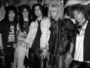
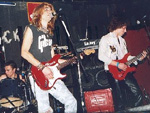
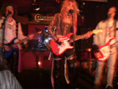
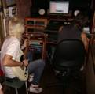

Biography
Gunner was formed by the end of 2002 as Gunner Sixx. Rodrigo Bugallo (Lead Guitar) and Mariano Angiolillio (former drummer), who were school mates, decided to form a band with noticeable influences of 80's hard rock. To achieve it, they had asked Emmanuel Blandini (Rhythm Guitar), who was another friend of them from secondary school, and Colo (ex bass player), who was a friend of Marian's brother, to join the band.
In the beginning, Gunner was mainly a band of covers. Songs of Motley Crue, Poison, Bon Jovi, Europe, Skid Row were performed at every rehearsal. Although during those months they tested several singers, none of them suited fine; and that was why Roxx decided to be the lead vocalist, in addition to being the main guitarist of the band.
• In early 2003: with the band well-established and rehearsing regularly, they received a phone call from Marcelo Viera (guitarist of Argentine Motley Crue tribute band, called Louder), who told them he had set up a music festival, which was going to take place at Asbury Park (Buenos Aires) on the 10th May and invited them to perform as support band of the show. There was a lot of publicity, including posters all over the streets and TV advertisements.The set-list of the show was: Cry Tough and No More Lookin' Back by Poison; Starry Eyes by Motley Crue; One Wild Night and Breakout by Bon Jovi, 3 own songs: Rockin' In The City, Sometimes and Crazy Nites; and they closed the show with the Poison cover: Look What The Cat Dragged In. This was the official live presentation of the band.Time went by and in June, Marcelo called them again, this time to play with his band at La Rocka (Buenos Aires) on the 19th of July. Everything was right, but 10 days before the show, Colo had to leave the band due to personal problems. Gunner was now without a bassist and the show was really close. It's then when Hernán Mastrogiacomo appeared.
To this show they played a new song: 'Secrets Of Loneliness' (Lyrics by Hernán Mastrogiacomo). From that moment, the band line-up was: Roxx on lead vocals and lead guitar, Emmanuel on rhythm guitar, Hernán on bass and Mariano on drums.
• 2004: In march they played at Hangar (a stadium placed in Buenos Aires), opening for Kamikaze, a very well-known argentinian band. They played for the first time at La Colorada (a large pub in Buenos Aires), sharing stage with Watchmen.
They also made a Poison Tribute at Acatraz. During that year, the band met Juan Manuel (ex-vocalist) he covered Queen's song 'Spread Your Wings'. The band kept performing live with Roxx on vocals. It was in the show they played at Crimson (a small pub in Buenos Aires) in September, again with Louder, when the band finally introduced Juan Manuel as their brand new singer. From that moment, they made a couple of gigs with this line-up and closed the year playing at Acatraz. In this show, Mariano wasn't able to play, so they replaced him with Walter (ex drummer), who was a drummer that worked at the rehearsal room they used to go. 2004 was about to end, and, we can’t avoid mentioning the terrible tragedy that happened in a theatre of Buenos Aires, called Cromagnon, while a band was playing live. The place caught fire and almost two hundred of people died. This fact would affect all the 'unsigned bands' throughout 2005.
• 2005: Started complicated. It was very difficult to find places to perform; and they decided to get the sack on Mariano, due to musical reasons. Walter was their new drummer and in March, they made a show at Alcatraz. Unluckily, Walter didn't have time to assist to rehearsals, so by the middle of the year, they changed drummer again. Gustavo (ex drummer), started rehearsing with Gunners and they were able to play again in October.

They decided not to waste time and began to record the band's demo. Part of it was recorded at Doble B (by Leandro Bordicelli) Recording Studios and part of it at Hernan's studio. It took them around six months to finish the recording, mixing and mastering of the demo. After the show they did at Acatraz, Gustavo left the band due to personal obligations, but Gunner continued with the recording sessions.
• 2006: The demo was in the heat of recording, whereas they looked for a drummer to perform live. It was then when Germán Calero (present drummer) appeared. He was a friend and a fan of the band. So, Gunner finally got established with Juan Manuel on vocals, Roxx on lead guitar, Emmanuel on rhythm guitar, Hernán on bass and Germán on drums. After the first gig they made at La Colorada in March, the demo was finished. It consists of 7 own songs: 'Desire', 'Dirty Love', 'Can't Prove it', 'Rockin' In The City', 'Secrets Of Loneliness', 'Someone To Love' and 'Over Again'. The sales of the demo were a complete success. The first 200 copies were sold out. They were very proud and contented with the result.

During that year, they made a lot of concerts; just to mention: two shows at La Colorada as the main band and a gig with Spanish Fly (Van Halen's Argentine tribute band) at Blues Special Club (Buenos Aires). In September, they played again at La Colorada and closed the year, the 1st December, at Acatraz.
By the end of 2006, Gunner were summoned to participate in a tribute Album to Europe, which will be released on 2007, both in Argentina and abroad. They recorded the song 'Love Chaser', from the "The Final Countdown" album, at the same studio they recorded the demo ('Doble B' Sound Recording Studio). You can download the entire song in the mp3 section of the page.
• 2007: Started with a couple of shows in Buenos Aires and took part in "The Cavern Rock Festival" bands tournament, organized by The Cavern Club Bs. As. Gunner qualified for the finals and ended between the first seventeen bands, among 220 musical groups which participated in the contest.

In August, the songs of the Demo recorded in 2006 were broadcasted at "HardRockin' 80s" Radio Station (Missouri, US) and they became "the band of the month" in October 2007. About the middle of November, they entered the studio and started with the recording of their new EP, an introduction of what is going to be the band's first official album. The EP includes four new tracks and can be fully downloaded in the MP3's section of the page. In the same month, they made a farewell-gig. Juan Manuel Biott decided to travel due to personal reasons and was forced to leave the band. However, he previously recorded all the vocals tracks of the EP and the band kept working on it.
• 2008:They were auditioning for a new singer to record their first album, and promoting the band all over the country and abroad, thanks to an advertisement, Aaron Briglia talked with Roxx and after some auditions he joined to the band on vocals, months later, Hernan decided leave the band. Gunner began to search a new bass player.
• 2009: The band started recording their first album 'Desire' at Synchro Records, produced by Esteban Gatti. During the first months of the year Roxx talked to differents record companies until he gets the first contract with Retrospect Records. In the beggining 2009 Rubén Estrada to play the bass, recorded the album and played live shows all over the country.

• 2010: Rubén left the group. Gunner was invited to play in a new edition of the 'Glamnation' festival at The Roxy Live in Buenos Aires, Argentina. The band finished recording "Desire"
Then, Germán offers Pablo Ansaldi, an old friend of the band, to take place as the Bass player just for a few shows, but the chemistry was so good that Pablo ended up being officially part of Gunner as the new Bass player. From there on, the band started a series of shows around the country, starting to present 'Desire'.
• 2011: For the first few months their album 'Desire' was edited in the USA with the company Retrospect Records, confirming the first tour in that country because of the good reception of the public. After some negotiations it was decided to cancel a series of shows and festivals in the USA due to legal problems with Nikki Sixx, the band is forced to change their name from Gunner Sixx, to GUNNER and they began promoting 'Desire'.
• 2012: They officially presented “Desire”with a serie of shows around the country and the three singles were released “Holdin’ On“, “Rockin In The City” and “Someone to love” as promotional videos, and they started being broadcasted on TV and on radio programmes as well.
Marcos Prevalil entered the band as the new keyboard player, and the band now consists of five musicians, and stably conformed as that, they started composing their new material.
• 2013: They started recording “Keep Fighting”. The new álbum consists of 13 new songs, keeping the essence, the rhythms, the melodies, the strength, and maintaining everything they started with “Desire” , but betting on something bigger, and with a better sound.
They worked on some different studios recording, mixing and mastering the album, with different technicians, and sound engineers.
Whereas they keep playing live shows, traveling, and working on what it is gonna be the oficial presentation of the “Fighting Tour 2014”.
After meeting the commitments he had assumed towards the band, Aaron leaves for personal reasons. On October 29 Pyper Muguertegui officialy becomes the new singer for the release of their new album, Keep Fighting, at Espacio Cultural ex "La Colorada".
• 2014:Gunner kicks off the year with shows in the downtown area of Buenos Aires and other provinces of the country, while, at the same time, started working on new material for their third album which is intended to be recorded by the end of the year.
Gunner.